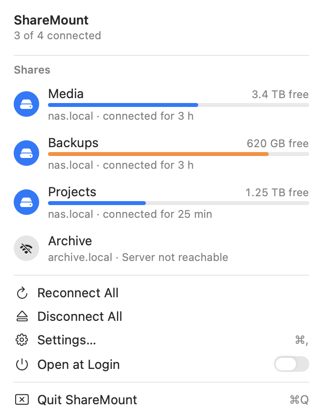
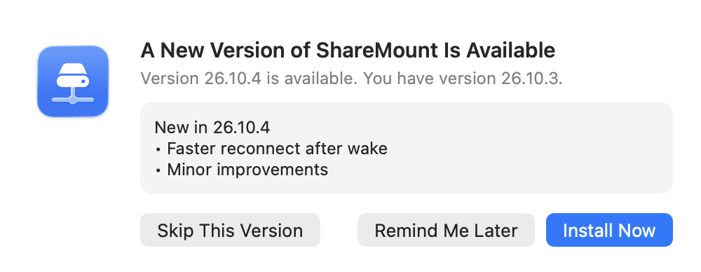
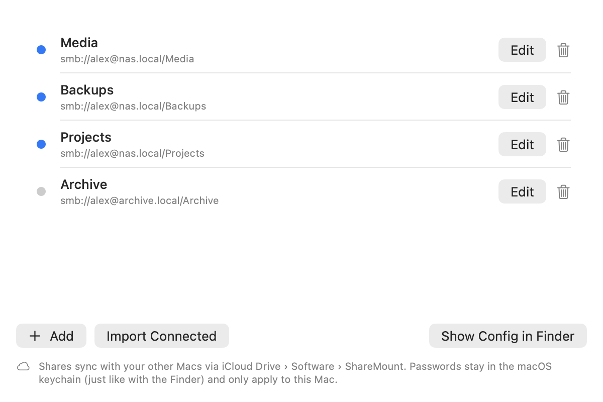

For the Mac menu barFür die Menüleiste des Mac
A small menu bar app that keeps SMB shares mounted and brings them back after sleep, network changes and NAS restarts. With the passwords macOS already keeps for the Finder.Eine kleine App für die Menüleiste, die SMB-Freigaben verbunden hält und sie nach dem Ruhezustand, nach Netzwerkwechseln und NAS-Neustarts zurückholt. Mit den Passwörtern, die macOS schon für den Finder kennt.


Just arrivedGerade neu
The latest releases make ShareMount at home on a shared Mac, give its buttons the Liquid Glass look and switch to calendar versions.Die letzten Releases machen ShareMount auf einem gemeinsam genutzten Mac zu Hause, geben seinen Knöpfen den Liquid-Glass-Look und wechseln zu Kalender-Versionen.
With fast user switching, every signed-in user runs their own ShareMount. It only looks at the shares you mounted yourself and leaves the other users' mounts alone.Beim schnellen Benutzerwechsel hat jeder angemeldete Benutzer sein eigenes ShareMount. Es kümmert sich nur um die Freigaben, die du selbst verbunden hast, und lässt die der anderen in Ruhe.
/Volumes/Name, yours is mounted at Name-1 without a warning.Belegt jemand anderes schon /Volumes/Name, landet deine ohne Warnung unter Name-1.If the app belongs to another user, macOS asks for an administrator password and the app keeps its owner. After one user installs an update, ShareMount restarts by itself for the others. Mounts stay connected.Gehört die App einem anderen Benutzer, fragt macOS nach einem Administrator-Passwort, und die App behält ihren Besitzer. Installiert ein Benutzer ein Update, startet ShareMount bei den anderen von selbst neu. Freigaben bleiben verbunden.
Year, month and the release of that month: 26.10.4 is the fourth release of October 2026. A new month starts again at .1. The jump from 2.5 is intended, the update check finds it as usual.Jahr, Monat und das Release in diesem Monat: 26.10.4 ist das vierte Release im Oktober 2026. Ein neuer Monat beginnt wieder bei .1. Der Sprung von 2.5 ist gewollt, die Update-Suche findet es wie gewohnt.
On macOS 26 and 27 the install and notice buttons use the glass style, and the menu rows follow the window corners.Auf macOS 26 und 27 nutzen die Installations- und Hinweisknöpfe den Glas-Stil, und die Menüzeilen folgen den Fensterecken.
2.4.1 removed the code that once carried settings over from the old app identifier. Nothing changed for you, and the app got a little smaller.2.4.1 hat den Code entfernt, der Einstellungen einst von der alten App-Kennung übernahm. Für dich hat sich nichts geändert, die App wurde etwas kleiner.
FeaturesFunktionen
ShareMount watches your shares in the background and quietly fixes what macOS leaves broken.ShareMount behält deine Freigaben im Hintergrund im Blick und repariert still, was macOS kaputt zurücklässt.
After wake, Wi-Fi changes and NAS reboots. While a server is away it backs off gently, from 30 seconds up to 15 minutes.Nach dem Aufwachen, nach WLAN-Wechseln und NAS-Neustarts. Ist ein Server weg, wartet ShareMount immer etwas länger, von 30 Sekunden bis zu 15 Minuten.
Hung mounts are detected with short timeouts and remounted, but never in the first seconds after wake.Hängende Freigaben werden mit kurzen Zeitlimits erkannt und neu verbunden, aber nie in den ersten Sekunden nach dem Aufwachen.
Connects through macOS with the password the Finder already saved. ShareMount never reads or stores a password.Verbindet über macOS mit dem Passwort, das der Finder schon gesichert hat. ShareMount liest oder speichert nie ein Passwort.
Keeps shares at /Volumes/Media instead of Media-1, so scripts and backups always find them, and tells you if a leftover folder is in the way.Hält Freigaben unter /Volumes/Media statt Media-1, damit Skripte und Backups sie immer finden, und sagt dir, wenn ein übrig gebliebener Ordner im Weg ist.
A rejected password stops all automatic retries until you sign in again, so your account is never locked out.Wird ein Passwort abgelehnt, stoppen alle automatischen Versuche, bis du dich neu anmeldest. So wird dein Konto nie gesperrt.
With iCloud Drive, your list of shares follows you to every Mac. Passwords stay in each Mac's keychain.Mit iCloud Drive kommt deine Liste der Freigaben auf jeden Mac mit. Passwörter bleiben im Schlüsselbund des jeweiligen Mac.
Designed like the Wi-Fi and Bluetooth menus of macOS 26 and 27, with free space per share, connection time and one click to open, disconnect or reconnect.Gestaltet wie die WLAN- und Bluetooth-Menüs von macOS 26 und 27, mit freiem Platz je Freigabe, Verbindungsdauer und einem Klick zum Öffnen, Trennen oder Neuverbinden.
Add shares by hand, pick a server found via Bonjour, paste an smb:// address, or adopt the shares already mounted in the Finder.Freigaben von Hand anlegen, einen per Bonjour gefundenen Server wählen, eine smb://-Adresse einfügen oder die Freigaben übernehmen, die im Finder schon verbunden sind.
When a share is lost, a password is rejected or an update is available. At most once every 10 minutes per share.Wenn eine Freigabe verloren geht, ein Passwort abgelehnt wird oder ein Update bereitsteht. Höchstens alle 10 Minuten je Freigabe.

Settings: your shares, synced between your Macs through iCloud Drive if you like.Einstellungen: deine Freigaben, auf Wunsch über iCloud Drive zwischen deinen Macs abgeglichen.
How it worksSo arbeitet es
ShareMount checks at launch, after wake, on every network change and once a minute. A share counts as dead only when the server stops answering or reading the folder hangs, twice in a row. Only then is it unmounted and mounted again.ShareMount prüft beim Start, nach dem Aufwachen, bei jedem Netzwerkwechsel und einmal pro Minute. Eine Freigabe gilt erst als tot, wenn der Server nicht mehr antwortet oder das Lesen des Ordners hängt, zweimal hintereinander. Erst dann wird sie getrennt und neu verbunden.
PrivacyDatenschutz
No analytics, no telemetry, no accounts. There is nothing to sign up for.Keine Analyse, keine Telemetrie, keine Konten. Es gibt nichts, wofür du dich registrieren musst.
ShareMount talks to your own SMB servers, browses for them via Bonjour while the share editor is open, and asks GitHub for new releases. Nothing else.ShareMount spricht mit deinen eigenen SMB-Servern, sucht sie per Bonjour, solange der Freigaben-Editor offen ist, und fragt GitHub nach neuen Releases. Sonst mit niemandem.
Your shares live in a readable shares.json in iCloud Drive or Application Support, the log in ~/Library/Logs. Passwords stay in the macOS keychain.Deine Freigaben stehen in einer lesbaren shares.json in iCloud Drive oder Application Support, das Protokoll in ~/Library/Logs. Passwörter bleiben im macOS-Schlüsselbund.
InstallInstallation
ShareMount is open source and signed locally, not notarized by Apple, so macOS asks once before the first launch.ShareMount ist Open Source und lokal signiert, nicht von Apple beglaubigt. Deshalb fragt macOS vor dem ersten Start einmal nach.
From then on ShareMount takes care of itself, updates included.Ab dann kümmert sich ShareMount um sich selbst, Updates eingeschlossen.
ShareMount.zip from the latest release and unzip it.ShareMount.app into your Applications folder. Updates replace it there.xattr -dr com.apple.quarantine /Applications/ShareMount.appShareMount.zip aus dem neuesten Release und entpacke es.ShareMount.app in deinen Ordner „Programme“. Updates ersetzen sie dort.xattr -dr com.apple.quarantine /Applications/ShareMount.appA drive icon appears in the menu bar. There is no Dock icon. Turn on Open at Login in the menu so it is there after every restart.In der Menüleiste erscheint ein Laufwerkssymbol. Im Dock gibt es keins. Schalte im Menü „Bei der Anmeldung öffnen“ ein, damit es nach jedem Neustart da ist.
Built with Apple frameworks only, no third-party code.Nur mit Apple-Frameworks gebaut, ohne Fremdcode.
Intel Macs are not supported. English and German interface, following your Mac's preferred language.Intel-Macs werden nicht unterstützt. Oberfläche auf Deutsch und Englisch, je nach bevorzugter Sprache deines Mac.
No Xcode needed, the Command Line Tools are enough.Kein Xcode nötig, die Command Line Tools reichen.
git clone https://github.com/SH1FT-W/sharemount.git
cd sharemount
./build.sh installUpdates arrive through the app itself: it checks GitHub releases after launch and every 6 hours, verifies the checksum, the bundle and the code signature, and swaps the app in place. Versions count year.month.release: 26.10.4 is the fourth release of October 2026.Updates kommen über die App selbst: Sie fragt nach dem Start und alle 6 Stunden die GitHub-Releases ab, prüft Prüfsumme, Bundle und Signatur und tauscht die App an Ort und Stelle. Versionen zählen Jahr.Monat.Release: 26.10.4 ist das vierte Release im Oktober 2026.
Open sourceOpen Source
ShareMount is a small, independent project under the MIT license. Found a bug or missing something? Open an issue on GitHub.ShareMount ist ein kleines, unabhängiges Projekt unter MIT-Lizenz. Fehler gefunden oder etwas vermisst? Mach ein Issue auf GitHub auf.